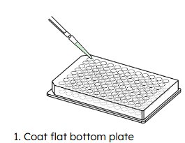
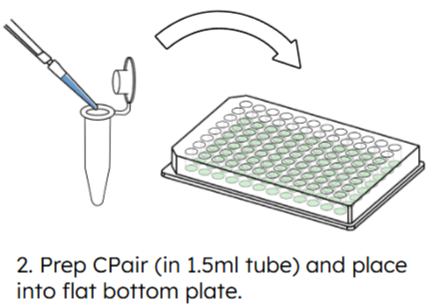
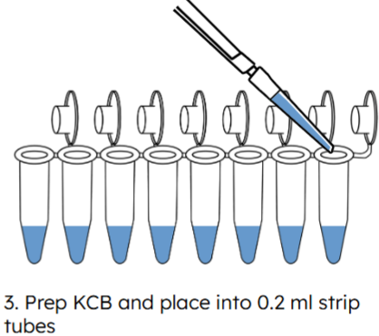
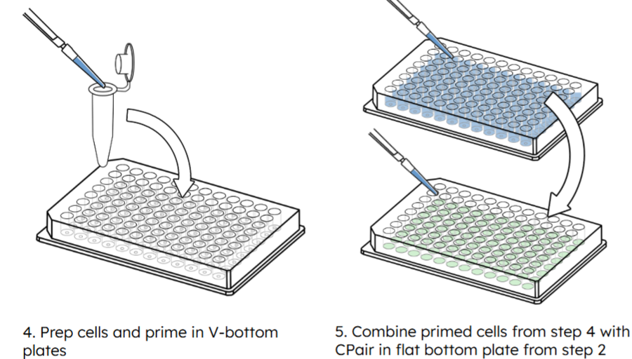
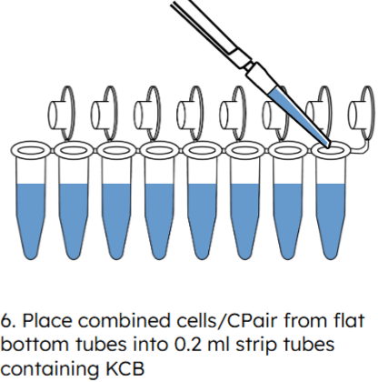

SimpleCell Protocol Trainer
Master the CS Genetics 3′ Gene Expression Assay — a single-cell library prep without droplets or wells.
Protocol steps
All 14 steps, laid out in full. Jump to any step from the sidebar, and tap a reagent term for handling notes, images and scaling tables.
Coat plates, prepare beads, make master mix, prime cells with , pair cells with beads in flat-bottom plates.
| 0.1% BSA/dPBS | 47 µL 7.5% BSA + 3,463 µL dPBS | Ice |
| 3.75% BSA/dPBS | 2 mL 7.5% BSA + 2 mL dPBS | Ice |
| 0.04% BSA/dPBS | 5 µL 7.5% BSA + 995 µL dPBS | Ice |
| 1M DTT | 0.154 g DTT + 1 mL nfH₂O | Ice |
1A. Coating Flat-Bottom Plates

- Add 120 µL cold dPBS + 0.1% BSA per well (1 well/sample). No bubbles at bottom.
- Incubate ≥1 min at 4°C
- Remove at 120 µL, then 10 µL to get all excess — residual liquid interferes with assay
- Store coated plates at 4°C until use
1B. CPair Preparation

- Tap tube on bench (never vortex). Pipette at 150 µL, 10× until homogeneous. Avoid warming with hands. Do not let solution sit for more than 30 sec before next step
- Transfer to 1.5 mL tube: 170 µL (8-sample kit) or 340 µL (16-sample kit)
- Magnet 1 min RT → remove sup (150 / 300 µL). Pellet is small — slides down!
- Wash: off magnet → +300 µL cold dPBS, pipette 5× → magnet 1 min → remove 300 µL
- Resuspend: +150 µL (8) or 300 µL (16) cold dPBS, pipette 10×
- Into pre-coated wells: 20 µL (Primary Tissue) or 15 µL + 5 µL dPBS (Cell Lines)
- Cover, store at 4°C — do not freeze. Unused washed good for 1 month at 4°C.
1C. KCB Master Mix Prep

- Quick spin . Mix with pipette at 600 µL (8) or 900 µL (16) until homogeneous
- is extremely viscous — pipette VERY slowly. No bubbles! Use reverse pipetting.
- Prepare : 73.6 µL + 6.4 µL 1M DTT per sample. Mix slowly.
- Aliquot 80 µL per tube into strip tubes, place on ice
1D. Cell Priming

- Cells: 250 cells/µL (cell lines, 5K total), 425/µL (PBMCs, 8.5K), 500/µL (organoids, 10K) in 20 µL dPBS+0.04% BSA
- Reconstitute : +200 µL ice-cold dPBS → vortex 30s → quick spin = 6×
- Dilute: 1× (20 µL 6×+100 µL dPBS) cell lines/PBMCs | 1.5× (30+90) organoids | 2× (40+80) primary
- Add 6 µL diluted to cells in V-bottom, mix 5× at 20 µL. Incubate on ice 20 min.
- Wash 1: +175 µL dPBS+3.75% BSA → mix 5× at 150 µL → 500×g, 3 min, 4°C → remove sup (see for technique)
- Wash 2: +200 µL dPBS+3.75% BSA → spin → remove sup (see for technique)
- Wash 3: +200 µL dPBS (NO BSA) → spin → remove all sup (see for technique) + residual with 20 µL tip
- Resuspend in 20 µL cold dPBS, mix 10×
- Transfer to flat-bottom with . Mix 20× at 20 µL — tilt plate, aspirate bottom/sides, dispense top
- Cover. Settle 40 min on ice — VIBRATION-FREE!
- Never vortex — pipette only. Avoid warming tube with hands.
- unstable above 4°C — use within 15 min. Aliquot unused 6× into 30 µL portions at -80°C.
- Cell viability must be ≥90%. Count after filtering.
- MACS: negative sorting ONLY — positive sorting interferes.
- : extremely viscous — reverse pipetting, go very slowly.
Disrupt settled cell-bead mix, combine with viscous master mix, flash-freeze on dry ice.
Procedure

- After 40 min: set pipette to 20 µL, mix 20× slowly — tilt plate, aspirate from bottom, dispense around well (technique in )
- Proceed immediately — transfer full volume (40–50 µL) Cells- → 80 µL
- Set pipette to 80 µL. Mix 15× — aspirate bottom, raise tips OUT of liquid, dispense ABOVE meniscus (technique in )
- Must be homogeneous (no refraction). Avoid bubbles.
- Seal tubes. Immediately submerge fully in dry ice ≥40 min.
- If >8 samples: work ONE strip tube at a time
- Safe stop: dry ice ≤24h | after ≥40 min dry ice → -80°C ≤4 weeks
- Do NOT allow samples to thaw during transfer
Prepare master mixes, run on frozen samples, add to capture barcoded RNA on beads.
95°C 15s → 55→40°C (1°C/6s = 90s) → 35→20°C (1°C/9s = 135s) → 20°C hold
| DB | 4°C → ice | Do NOT vortex |
| R1A, R1B, R1C | -20°C → ice | Vortex before use |
| R2, R3 | -20°C → ice | Do NOT vortex |
| WA | -20°C → RT | Vortex to dissolve |
| WB | 4°C → RT | — |
DTT & Master Mix Prep
- Start . Only the 4°C hold
- : 2 µL 1M → 998 µL nfH₂O = 2 mM. Then 83 µL 2mM → 917 µL nfH₂O = 166 µM.
- Prepare , , and (, , , , ) per tables.
- Quick spin reagent and mix thoroughly with pipette 10X so the beads are homogeneous. DO NOT VORTEX. Prepare as described. Place on ice until use
- Ensure precipitate has dissolved by vortexing . Quick spin and prepare . Store at ROOM TEMPERATURE until use.
- Mix each 10×. Place unused reagents back into noted storage conditions after preparing each mix.
- Vortex , and . DO NOT vortex and . Quick spin all R reagents. Prepare and mix up and down 10X. Store on ice until use and place the R reagents back
Barcoding
- Transfer frozen samples (Cells + + ) directly from dry ice → thermocycler → run
- When done: proceed immediately at RT
- Mix 10× to resuspend. Add 82 µL per sample in 8-strip tube.
- Set pipette to 120 µL, mix 10× with technique, but only 10X
- Magnet 5 min until clear. Start .
- ramp rates CRITICAL — verify thermocycler
- Use freshly made 1M DTT solution or the frozen 1M DTT drom Step 1
- Vortex , , and
- Do NOT vortex , nor
- Proceed immediately after
Wash beads: off-magnet, then 2× on-magnet.
Procedure
- With tubes On magnet: carefully remove 180 µL sup without disturbing or touching the beads → remove ~20 µL residual
- Tubes Off magnet: +160 µL . Pipette 10× at 120 µL to resuspend without introducing bubbles. Some clumping might occur. Be sure to completely resuspend beads before proceeding
- Tubes on Magnet 2 min until clear → remove 160 µL → remove ~10 µL residual without touching any beads
- Keeping tubes On magnet: +180 µL → Incubate 30 sec → Remove all: first 180 µL and then 10 µL
- Repeat wash (2 total). Do NOT let beads dry. Proceed immediatly
- Do NOT let beads dry — proceed to RT immediately
- Some clumping might be noticed when resuspending beads with . Be sure to completely resuspend beads
Add RT master mix to cleaned beads on ice, run .
20°C 2min → 30°C 2min → 40°C 2min → 50°C 15min → 55°C 15min → 98°C 3min → 4°C hold
Procedure
- Remove from magnet → place on ice. Add 20 µL to each tube with washed beads.
- Pipette 15× at 15 µL. Careful not introduce bubbles. If clumps: mix 10–20× more.
- Seal tubes with lids, run . Volume = 20 µL. Runtime approx 40 minutes.
- Lid 105°C for ALL programs
- Keep mixing until clumps break
Add RNaseH to digest RNA strand of RNA:cDNA hybrids.
37°C 20min → 65°C 5min → 4°C hold
Procedure
- Remove RNAse from -20°C and place on ice
- Remove tubes from ThermoCycler → ice. Start . Quick spin.
- Add 1.5 µL (RNaseH). No mixing needed.
- Seal tubes with lids, transfer to thermocycler and run . Volume = 22 µL.
- No mixing required after adding RNaseH
Add 3S master mix to generate double-stranded cDNA.
75°C → 20°C ramp (2.5°C/min = 22 min) → 4°C hold
Procedure
- Remove , and from -20°C and place on ice. Place DNA purification beads at room Temperature
- Vortex + ( precipitates during storage!). Do NOT vortex . Ensure agent fully disolves before use
- Quick spin , and . Prepare and store on ice until use. Mix 10×.
- Remove samples from thermocycler and place On ice
- Start the (3S) program on the thermocycler
- Quick spin samples on benchtop centrifugue: add 10 µL . Mix 15× at 20 µL. Be sure to disrupt the beads until homogeneous
- Seal tubes with lids, transfer to thermocycler run (3S) program. Volume = 32 µL.
- precipitates — vortex until dissolved
- When is added, be sure to disrupt the beads from the bottom of the tube until homogeneous
Add Proteinase to release cDNA from beads??.
37°C 15min → 55°C 10min → 4°C hold
Procedure
- Proteinase is in box 1 at -20°C, place on ice
- After program (3S) has finished → Remove → ice. Start program.
- Add 1 µL . Mix 10× at 20 µL.
- Run program on thermocycler. Volume = 33 µL.
SPRI purification. 80% EtOH ×3. Elute 30 µL → transfer 28 µL.
Procedure (Room Temperature)
- Take and from the -20°C box and place on ice
- +20 µL nfH₂O to the sample from step.
- +75 µL DNA Purification beads. Mix 10×. Ensure DNA purification beads are well mixed before use
- Incubate 5 min RT → magnet 2 min or until supernatant clear → remove 105 µL supernatant carefully
- Wash ×3: +180 µL 80% EtOH while tubes are on magnet without disturbing beads → wait 1 min → remove all supernatant
- After final wash, further remove 10-20 µL to remove residual EtOH
- Dry pellet to matte (not glossy: approx 2–5 min). Do not overdry
- Tubes Off magnet: +30 µL nfH₂O. Resuspend pellet by pippeting. Incubate 5 min RT. (Make now!)
- After incubation, quick spin samples and place on Magnet 2 min → transfer 28 µL supernatant to new 0.2mL tube.
- Avoid taking beads with the sample. Beads can be discarded
- Fresh 80% EtOH with ddH₂O
- Use 5-min elution to prep
PCR amplify cDNA. 12 cy (cell lines) or 13 cy (Primary cells).
98°C 45s → [98°C 15s → 60°C 30s → 72°C 30s] × 12/13 → 72°C 1min → 4°C
Procedure
- Set : 13 cycles for Primary cells
- Quick spin and reagents. Prepare . Store on ice until use. tube will be used later?
- Mix 15× without introducing bubbles. On ice or cold block: +12 µL to 28 µL eluate from previous step. Mix well 5×.
- Seal tubes with lids, transfer to thermocycler and run . Volume = 40 µL.
- If continuing the same day, prepare Library Enrichment Beads ( )
- Keep for Step 13!
- Safe stop: -20°C ≤3 days
Dilute 1:1 with dPBS. Aliquot 17 µL/sample.
Procedure
- Vortex and pipette 10× to fully homogenize. Tranfer volume according to number of samples to a 1.5 mL tube
- Dilute 1:1 with dPBS. Mix 10×.
- Aliquot 17 µL diluted per sample in a new set fo strip tubes. Set aside at Room Temperature.
Double-sided SPRI size selection, then bead enrichment.
12A. Size Selection (Room Temperature)
- +60 µL nfH₂O to the sample from Amplification Step. +50 µL DNA purification beads. Mix 10×. Incubate 5 min RT.
- Put tube on magnet for 2 minutes or until supernatant is clear
- KEEP 145 µL SUPERNATANT → new PCR tubes
- Off magnet: +20 µL DNA purification beads beads to the 145 µL SUPERNATANT. Mix well. Incubate 5 min RT. Magnet 2 minutes or until supernatant is clear
- Carefully remove supernatant with pipette 150 µL and discard most supernatant.
- Wash ×3: +180 µL 80% EtOH to sample while on magnet without disturbing beads. Wait for 1 minute and remove all supernatant
- Take smaller pipette set to 10-20µL and remove excess EtOH
- Dry 1–3 min. Until matte, not glossy. Do not overdry
- Remove from magnet and add +19 µL nfH₂O to resuspend the bead pellet.
- Incubate 5 min RT → Quick spin and place on magnet for 2 minutes.
- transfer 17 µL of eluate to the tube containing 17 µL diluted .
12B. Library Enrichment
- 17 µL eluate + 17 µL diluted . Mix 10×.
- Incubate 15 min RT — mix 10× every 5 min!
- +116 µL dPBS. Mix 10×. Magnet 2 minutes or until supernatant clear → With pipette to 150 µL remove all supernatant.
- Wash ×2: Keeping tube on magnet +150 µL dPBS → 1 min → remove 150 µL without removing beads. Discard all supernatant
- Tubes Off magnet: +27 µL nfH₂O = Resuspend the bead pellet containing Enriched Library.
- KEEP supernatant after 1st binding — it IS your library!
- 1st beads = remove large. 2nd beads = capture library.
- Mix 10× every 5 min during incubation.
Add Illumina UDI indexes. Amplify with . 7 cycles.
98°C 45s → [98°C 15s → 60°C 30s → 72°C 30s] × 6/7 → 72°C 1min → 4°C
Procedure
- Start : 7 cycles for primary cells
- Quck spin Illumina UDIs (Accesory box -20°C
- Determine which Index will be associated with each sample
- Add 3 µL UDI to 27 µL Enriched Library Bead Mixture. RECORD INDEX!. Place samples on Ice or Cold Block
- Quick spin . Add 10 µL . Mix 15× with pipette set at 30 µL. Cover tubes with lids, transfer to thermocycler and Run .
- 6 cy cell lines, 7 cy PBMCs
- Record index → sample mapping!
Final SPRI (100 µL EtOH washes). Library QC & sequencing.
14A. Final Clean-up (Room Temperature)
- +10 µL nfH₂O tp Post indexing PCR reaction. → +40 µL beads. Mix. → Incubate 5 min RT.
- Put on Magnet for 2 minutes or until supernatant clear → remove with pipettet set to 70 µL most supernatant
- Wash ×3: +100 µL 80% EtOH (NOT 180!) While on magnet without disturbing beads → Wait 1 minute and remove all supernatant.
- Set pipette to 10-20µL and remove excess EtOH
- Dry 2–5 min until it is matte (not glossy). Do not overdry.
- Remove tubes from magnet adn add +20 µL nfH₂O to resuspend pellet → Incubate 5 min RT → Place on magnet for 2 minutes.
- Transfer 18 µL to new tube without beads. Beads can be discarded
- Cover tubes of the ready to sequence libraries. Store: 4°C ≤24h | -20°C long-term
14B. Library QC & Sequencing
- 1 µL on TapeStation or Fragment Analyzer. Expected: 600–800 bp.
- Quantify by qPCR.
- Load: AVITI 600 pM | NextSeq 2000 1.4 nM | NovaSeq 6000 300 pM | NovaSeq X 150 pM
- 2% PhiX spike-in
- Read1 92cy · I1 10cy · I2 10cy · Read2 26cy
- 30,000 reads/cell. Output: Count Matrix + Assay QC.
- 100 µL EtOH washes here (NOT 180 µL)
- Output: Count Matrix + Assay QC
Reagent reference
Tap any reagent for handling notes, kit location, images and master-mix scaling.
Box 2 (4°C)
Box 1 (−20°C)
Box 1 (−20°C) — UNDER INSERT!
Prepared fresh (Step 1C)
Prepared fresh (Step 3)
Prepared fresh (Step 7)
Prepared fresh (Step 10)
Technique — Step 1D
Technique — Step 2
Thermocycler Programming
Library & sequencing
Final library structure, read layout and loading concentrations.
Library structure (5′→3′)
R1: 92cy · I1: 10cy · I2: 10cy · R2: 26cy
Sequencer loading
30,000 reads/cell · 2% PhiX · 600–800 bp average insert
Challenge mode
Test yourself. With JavaScript enabled this becomes a scored quiz with XP, levels and streaks; without it, every question below is a self-check card — pick an answer, then reveal it.
-
What is the very first sub-step?
Show answer & hint
Coating flat-bottom plates with 0.1% BSA/dPBS
Step 1A — what do wells need first?
-
Which step follows Kinetic Confinement?
Show answer & hint
Barcoding & Capture of Target RNA
Step 2 → Step ?. Uses TRB.
-
How many total protocol steps?
Show answer & hint
14
Steps 1 through ?
-
Which phase does belong to?
Show answer & hint
Post-PCR
Step 10 — boundary is between 9 and 10.
-
What does stand for?
Show answer & hint
Cell Pairing Mix
Lyophilized reagent in Step 1D.
-
Sequencing platform?
Show answer & hint
Illumina
UDI adapters from this company.
-
Minimum cell viability?
Show answer & hint
≥90%
Cell Handling section.
-
storage temp?
Show answer & hint
4°C (Box 1)
Kit Components — Box 1.
-
Which MACS sorting interferes?
Show answer & hint
Positive sorting
Use _____ sorting only.
-
Safe stop after Kinetic Confinement?
Show answer & hint
Dry ice ≤24h or -80°C ≤4 weeks
Two options: cold solid + freezer.
-
aliquot per sample?
Show answer & hint
80 µL
Step 1C — into strip tubes on ice.
-
BSA concentration for coating plates?
Show answer & hint
0.1% BSA in dPBS
Step 1A — the thinnest BSA.
-
Cell concentration for PBMCs?
Show answer & hint
425 cells/µL (8,500 total)
Between cell lines (250) and organoids (500).
-
incubation time on ice?
Show answer & hint
20 min
Step 1D, after 6 µL CPM.
-
volume per sample?
Show answer & hint
82 µL
75.6 + 6.4 = ?
-
Cell/ settling time?
Show answer & hint
40 min on ice
Step 1D final — vibration-free!
-
RNaseH volume per sample?
Show answer & hint
1.5 µL
Step 6 — no mixing needed.
-
Centrifuge settings for cells?
Show answer & hint
500 × g, 3 min, 4°C
Step 1D washes.
-
Which reagents must NOT be vortexed?
Show answer & hint
R2, R3, S2, CPair, and DB
Across Steps 1, 3, 7.
-
cycles for Primary cells?
Show answer & hint
12 cycles
Step 10 — Same as Organoids and PBMCs.
-
cycles for Primary Cells?
Show answer & hint
7 cycles
Step 13 — +1 vs cell lines.
-
UDI volume in ?
Show answer & hint
3 µL
Step 13 sub-step 2.
-
Eluate transferred after post-3S clean-up?
Show answer & hint
28 µL (from 30 µL elution)
Step 9 — leave ~2 µL.
-
volume for 8-sample kit?
Show answer & hint
170 µL
8-sample = 170, so 16 = ?
-
Washed storage at 4°C?
Show answer & hint
1 month
Step 1B reuse note.
-
enzyme activity temp?
Show answer & hint
37°C, 20 min
Step 6 TC program.
-
Proteinase volume?
Show answer & hint
1 µL
Smallest addition.
-
EtOH wash volume in Step 14?
Show answer & hint
100 µL
Different from Steps 9/12.
-
RT master mix total volume?
Show answer & hint
20 µL
Sum all components.
-
dPBS added during enrichment?
Show answer & hint
116 µL
Step 12B after 15 min.
-
Coating solution volume per well?
Show answer & hint
120 µL
Step 1A sub-step 1.
-
For kinetic confinement, Min time on dry ice before -80°C?
Show answer & hint
40 minutes
Same as settling time.
-
ramp 55→40°C?
Show answer & hint
1°C per 6 seconds (90s)
First (faster) TRB ramp.
-
ramp 35→20°C?
Show answer & hint
1°C per 9 seconds (135s)
Second (slower) TRB ramp.
-
3S program ramp rate?
Show answer & hint
2.5°C/min (75→20°C in 22 min)
55°C drop in 22 min.
-
How is 6× prepared?
Show answer & hint
200 µL ice-cold dPBS into lyophilized tube, vortex 30s
Step 1D sub-step 5. Powder.
-
1.5× dilution (organoids)?
Show answer & hint
30 µL 6× + 90 µL ice-cold dPBS
1×=20+100, 2×=40+80. 1.5×=?
-
Step 12 first binding: supernatant?
Show answer & hint
KEEP it — transfer 145 µL (it's your library!)
Most critical DO NOT DISCARD.
-
How is prepared?
Show answer & hint
1M→2mM (2+998 µL), then 2mM→166µM (83+917 µL)
Serial: 2/1000×1M=2mM, 83/1000×2mM=166µM.
-
Expected library fragment size?
Show answer & hint
600–800 bp average
Analyzed 150–1500 bp range.
-
NextSeq 2000 loading?
Show answer & hint
1.4 nM
Only nM value.
-
NovaSeq X loading?
Show answer & hint
150 pM
Lowest pM.
-
AVITI FS loading?
Show answer & hint
600 pM
Highest pM.
-
Read 1 cycles for sequencing??
Show answer & hint
92 cycles
Longest read.
-
Read 2 cycles?
Show answer & hint
26 cycles
Shorter read.
-
For how many cycles are Indexes sequenced (each)?
Show answer & hint
10 cycles each
I1 = I2.
-
PhiX spike-in?
Show answer & hint
2%
Seq Rec step 4.
-
Read depth?
Show answer & hint
30,000 reads/cell
Seq Rec step 1.
-
Volume after treatment?
Show answer & hint
33 µL
32 (3S) + 1 (K) = ?
-
RT highest temperature?
Show answer & hint
98°C, 3 min
Heat inactivation step.
-
program temps?
Show answer & hint
37°C 15 min → 55°C 10 min
Compare: RNAH = 37/20 + 65/5.
-
Cell washes after incubation?
Show answer & hint
3 washes (BSA, BSA, no-BSA)
Two 3.75% BSA, then plain dPBS.
-
dPBS wash volume in Step 12B?
Show answer & hint
150 µL (×2 washes)
Uses dPBS, not EtOH.
-
DNA Purification beads in Step 12 first binding?
Show answer & hint
50 µL
Removes large fragments. 2nd = 20 µL.
-
How is 0.04% BSA/dPBS prepared?
Show answer & hint
5 µL 7.5% BSA + 995 µL dPBS
(0.04/7.5)×1000 ≈ 5.
-
Why must everything before be kept on ice?
Show answer & hint
KCB contains a heat-activated lysis agent — warming causes premature lysis before confinement is established
Think about WHEN lysis should happen vs. when cells are still in low-viscosity buffer.
-
Why is unstable above 4°C?
Show answer & hint
The cell-binding molecules degrade or aggregate at higher temperatures, losing their ability to prime cells for CPair binding
CPM must insert into or bind the cell membrane. What happens to amphiphilic molecules when they warm up?
-
Why must cells be paired with BEFORE transfer into ?
Show answer & hint
KCB is too viscous for cells and beads to find each other — pairing must happen in low-viscosity buffer first
Think about diffusion. Can a cell and a bead 'find' each other in a viscous matrix?
-
What is the primary role of 's high viscosity?
Show answer & hint
Restricting diffusion of mRNA and indexing oligos to maintain single-cell resolution without physical partitions
Kinetic CONFINEMENT — what is being confined, and from what?
-
Why does enable 'single-cell' indexing without droplets or wells?
Show answer & hint
High viscosity creates virtual compartments — each cell-bead pair's molecules stay local, preventing inter-pair crosstalk
Think about what happens when you release mRNA and oligos into a very thick liquid vs. a thin one.
-
Why can frozen cell- samples in be stored at -80°C for weeks without quality loss?
Show answer & hint
KCB has cryoprotective properties that prevent ice crystal damage to paired cell-bead complexes
The preprint specifically mentions KCB's 'cryoprotective effect.' What do cryoprotectants do?
-
What happens during the 95°C step in the program?
Show answer & hint
Cells lyse and indexing oligonucleotides are released from CPair beads
Two things happen simultaneously at high temperature: one to the cell, one to the bead.
-
Why is the ramp-down (55→40°C) slow and controlled, not instant?
Show answer & hint
The gradual cooling allows poly(dT) indexing oligos to hybridize to mRNA poly(A) tails at optimal annealing temperatures
What happens when complementary DNA/RNA sequences are slowly cooled through their melting temperature?
-
Why is the second ramp (35→20°C) SLOWER than the first (55→40°C)?
Show answer & hint
Lower temperatures favor more stable but slower hybridization — extra time allows remaining oligo-mRNA pairs to anneal
1°C/6s (first ramp) vs 1°C/9s (second ramp). Why give more time per degree at lower temps?
-
Why are ramp rates thermocycler-specific?
Show answer & hint
Different thermocyclers have different thermal masses and heating elements, so actual vs. programmed ramp rates can diverge
CS Genetics provides a specific link for thermocycler ramp speed verification. Why would this matter?
-
Why is DTT added fresh to , , and rather than pre-mixed in the kit?
Show answer & hint
DTT oxidizes over time in solution — adding it fresh ensures an active reducing environment when needed
DTT is a reducing agent. What happens to reducing agents over weeks in solution at any temperature?
-
Why must never be vortexed?
Show answer & hint
Vortexing could shear the indexing oligonucleotides off the bead surface or fragment the beads, destroying barcodes
CPair beads carry ~50,000 unique barcode oligos on their surface. What does mechanical shearing do to surface-attached DNA?
-
Why must not be vortexed?
Show answer & hint
DB contains capture beads with surface-attached oligos — vortexing could damage the oligos or fragment the beads
Same reason as CPair — DB also contains beads. What are those beads for?
-
Why CAN you vortex , , , , and ?
Show answer & hint
These are soluble enzyme/primer mixes without bead-attached oligos — shearing forces don't damage them
Compare: what's different about these reagents vs. CPair and DB? Think about what's in solution vs. on a surface.
-
Why are there THREE washes after incubation (two BSA, then no-BSA)?
Show answer & hint
Remove unbound CPM (which would block CPair binding sites), then remove BSA itself (which could interfere with pairing)
If free CPM molecules carry over to the pairing step, what would they do to CPair bead binding sites?
-
Why does the final cell wash use plain dPBS (no BSA)?
Show answer & hint
Residual BSA could coat cell surfaces and block CPM-CPair binding during the pairing step
BSA is a large sticky protein. If it coats the cell surface after CPM priming, what happens when CPair tries to bind?
-
In Step 12, why does the FIRST bead binding remove large fragments while your library stays in the supernatant?
Show answer & hint
A low bead ratio (0.5×) preferentially captures only the largest DNA fragments, leaving smaller library fragments in solution
SPRI bead ratio determines the size cutoff. Low ratio = only big fragments bind. Your library is the right size to stay free.
-
Why is the size selection double-sided (two sequential bead bindings)?
Show answer & hint
First binding removes large contaminants (genomic DNA, artifacts). Second binding captures your library while leaving small contaminants (primer dimers) behind.
Think: what's TOO BIG (genomic DNA) and what's TOO SMALL (primer dimers)? Two cuts = one window.
-
Why is Proteinase treatment needed after Second Strand Synthesis?
Show answer & hint
To digest proteins (including the binding molecules connecting cell to bead) and release the cDNA from the bead complex
At this point, your cDNA is still physically attached to CPair beads via protein linkages. How do you free it?
-
Why does second strand synthesis use random-location priming instead of a specific primer?
Show answer & hint
Random priming creates unique start sites (5S) for each molecule, enabling PCR duplicate detection without UMIs
The preprint explains that 5S coordinates replace UMIs for deduplication. How does a unique start site identify a PCR duplicate?
-
Why does positive MACS sorting interfere with the assay but negative sorting doesn't?
Show answer & hint
Positive sorting coats cells with antibody-conjugated beads that could sterically block CPM/CPair binding to the cell surface
In positive sorting, target cells get coated with magnetic particles. What does that do to the cell surface accessibility?
-
Why must the 40-minute settling step be vibration-free?
Show answer & hint
Vibrations would prevent cells and CPair beads from settling together to the bottom and forming stable 1:1 pairs
Gravity is pulling cells and beads to the bottom of the flat-bottom well. What disrupts gravity settling?
-
Why are flat-bottom plates used for cell- pairing (not V-bottom)?
Show answer & hint
Flat bottom provides a larger settling area so cells and beads spread out, reducing the chance of multiple cells settling on the same bead
Think about geometry: in a V-bottom, everything concentrates at one point. In flat-bottom, things spread out. Which favors 1:1 pairing?
-
Why is reverse pipetting recommended for ?
Show answer & hint
KCB is extremely viscous — standard pipetting creates an air gap that causes bubbles, while reverse pipetting pre-fills the tip eliminating the air gap
In standard pipetting, the first stroke draws in air. In viscous liquid, that air becomes trapped bubbles. Reverse pipetting avoids this how?
-
Why must there be no visible refraction in the -cell mixture before freezing?
Show answer & hint
Visible refraction indicates inhomogeneous mixing — some regions would have wrong viscosity, compromising kinetic confinement
Refraction = two liquids with different densities not fully mixed. If confinement depends on uniform viscosity, what happens in a thin patch?
-
Why do you mix by aspirating from the BOTTOM and dispensing ABOVE the meniscus?
Show answer & hint
This creates a folding action that mixes viscous liquid without trapping air bubbles inside the solution
If you aspirate and dispense at the same depth in thick liquid, you just push liquid around in a circle. How do you actually fold layers?
Ordering challenges
-
Order the major pre-PCR phases:
- Cell Priming & Pairing
- Kinetic Confinement
- Barcoding & RNA Capture
- Post-Capture Clean-up
- Reverse Transcription
Show hint
Steps 1→5
-
Order the enzymatic reactions:
- Reverse Transcription
- RNaseH Treatment
- Second Strand Synthesis
- Proteinase K Treatment
Show hint
cDNA → destroy RNA → dsDNA → release
-
Order the post-PCR steps:
- Amplification PCR
- Enrichment Beads Prep
- Size Selection & Enrichment
- Indexing PCR
- Post-Indexing Clean-up
Show hint
Amplify→Beads→Select→Index→Clean
-
Order the Cell Priming sub-steps:
- Coat plates
- Prepare CPair
- Prepare KCB MM
- Prime cells with CPM
- Pair cells with CPair
Show hint
1A→1B→1C→1D
-
Order the 7 thermocycler programs:
- TRB
- RT
- RNAH
- 3S
- PK
- PCR1
- PCR2
Show hint
Barcode→RT→RNaseH→2nd→PK→Amp→Index
-
Order the 3 cell wash buffers (Step 1D):
- dPBS + 3.75% BSA
- dPBS + 3.75% BSA (repeat)
- dPBS only (no BSA)
Show hint
Two high-BSA, then plain.